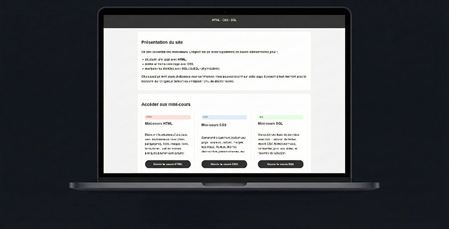

🌐
Configuration Infrastructure Réseau
Conception et configuration d'une infrastructure réseau : adressage, VLAN et routage.
📄 Documentation bientôt
BTS SIO SISR — 2e année
Spécialisé en cybersécurité et réseaux. Passionné par l'informatique, rigoureux, autonome et curieux. Je m'intéresse particulièrement à la cybersécurité, à l'administration système/réseau et au matériel qui fait tourner tout ça.
À propos
Étudiant en BTS SIO, spécialisation cybersécurité et réseaux (option SISR), au Lycée Marie Curie à Marseille. Je suis actuellement en 2e année.
Passionné par l'informatique, j'aime comprendre comment fonctionnent les systèmes et les réseaux, les administrer et les sécuriser. Je mène aussi une veille technologique sur les puces en silicium, le matériel au cœur de toute infrastructure.
Obtenir mon BTS SIO et me spécialiser en cybersécurité et administration système/réseau.
Français (natif) · Anglais technique (avancé)
Titulaire du BAFA (2025) — animateur en centre social ou de loisir.
Compétences
Cliquez sur une compétence pour voir le détail.
Portfolio
Réalisations en réseaux/sécurité et en développement.
Conception et configuration d'une infrastructure réseau : adressage, VLAN et routage.
Analyse de sécurité et durcissement d'un système Linux avec mise en place d'un pare-feu.
Bot Discord avec commandes utilitaires, développé en JavaScript et connecté à des API.

Plateforme de cours interactifs pour apprendre les bases du web et des bases de données.
Application web mesurant la vitesse de frappe et le temps de réaction de l'utilisateur.
Parcours
Lycée Marie Curie, Marseille. Solutions d'Infrastructure, Systèmes et Réseaux. Actuellement en 2e année.
Stages en entreprise (Durant mon BTS)
Marignane (13) · Support informatique
Vectorys est un groupe de transport routier international et de logistique, spécialisé dans les liaisons entre l'Europe et l'Afrique du Nord (Tunisie, Maroc, Algérie…). Il assure le transport de marchandises par semi-remorques, l'affrètement et les formalités de douane pour des clients de l'industrie automobile, du textile ou de l'agroalimentaire.
J'intervenais en support informatique auprès des employés de l'entreprise.
Second stage prévu. En cours de recherche
Obtention du BAFA pour devenir animateur en centre social ou de loisir.
Lycée Denis Diderot. Systèmes d'Information et Numérique.
Veille technologique
Processeurs, mémoire, puces pour l'IA : tout le numérique repose sur le silicium. Je suis l'évolution de la fabrication des puces, leurs enjeux géopolitiques et leur sécurité, en lien avec mon option SISR.
Les serveurs, routeurs et postes que j'administre dépendent de ces puces : leurs performances, leur disponibilité et leurs failles ont un impact direct sur les infrastructures.
Flux RSS (Feedly), alertes Google, comptes LinkedIn d'acteurs du secteur et newsletters spécialisées.
Collecter, trier par thème, vérifier auprès de plusieurs sources, puis synthétiser les points clés ci-dessous.
TSMC, Samsung et Intel (procédé 18A) passent au 2 nm avec des transistors GAA (Gate-All-Around), qui remplacent le FinFET pour mieux contrôler le courant et réduire la consommation.
Source : IEEE Spectrum, Tom's HardwareLe néerlandais ASML est le seul fournisseur mondial de machines de lithographie EUV. Sa génération High-NA, livrée d'abord à Intel fin 2023, doit permettre de graver des motifs encore plus fins.
Source : ASML, imecPlutôt qu'une seule grande puce, on assemble plusieurs « chiplets » dans un même boîtier (AMD Ryzen/EPYC, packaging CoWoS de TSMC). Le standard ouvert UCIe vise à les rendre interopérables.
Source : SemiAnalysis, UCIe ConsortiumEntré en vigueur en septembre 2023, il vise à doubler la part de l'Europe dans la production mondiale de semi-conducteurs pour atteindre 20 % en 2030. En France, le site de Crolles (STMicroelectronics) et le CEA-Leti à Grenoble sont au cœur de cette stratégie.
Source : Commission européenneLa majorité des puces les plus avancées sont produites à Taïwan par TSMC. Les États-Unis relocalisent une partie de la production (CHIPS and Science Act, 2022) et limitent l'export de technologies vers la Chine.
Source : Le Monde Informatique, NextGPU (NVIDIA, AMD), TPU (Google) et NPU intégrés aux processeurs de PC : l'IA pousse vers des puces spécialisées, avec un défi majeur sur la consommation électrique des datacenters.
Source : IEEE Spectrum, Tom's HardwareSpectre et Meltdown (2018) ont montré que les optimisations du processeur peuvent faire fuiter des données. Ces failles se corrigent par des mises à jour de microcode, de l'OS et du BIOS : une tâche concrète pour un administrateur système.
Source : ANSSI / CERT-FRLa puce TPM 2.0, exigée par Windows 11, stocke les clés de chiffrement (BitLocker) et vérifie l'intégrité du démarrage. De son côté, l'architecture ouverte RISC-V permet d'auditer plus facilement le cœur d'un processeur.
Source : Microsoft Learn, RISC-V InternationalContact
Retournez une carte pour obtenir mes coordonnées, ou remplissez la carte message.